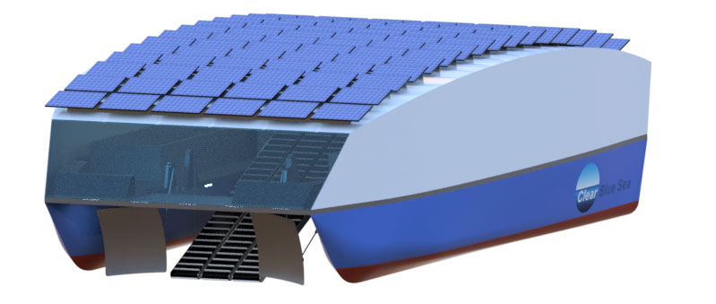

Clear Blue Sea is a Nonprofit 501(c)(3)
MISSION:
Ensure the survival of the marine ecosystem and the health of the maritime economy by removing macro and microplastic debris from our oceans and returning the marine environment back to clear blue seas.
START UP STRATEGY:
Secure crowdfunding for the initial design of our Floating Robot for Eliminating Debris (FRED), educational outreach, and technology roadmap. We also will apply for federal, NGO, and philanthropic grants for FRED prototype development. We will optimize our design and develop a small fleet of FREDs for a pilot project in the Pacific Gyre. Based on pilot findings, Clear Blue Sea will commercialize FRED fleets for deployment around the world.